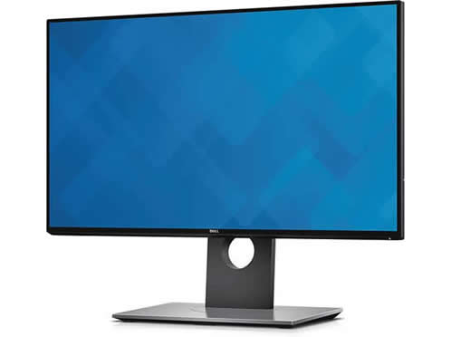

Hovedkort
Datamaskinens hovedkort er et kretskort som binder sammen de andre komponentene i maskinen. På hovedkortet er det en databuss som kobler sammen de komponentene som må sende signaler til hverandre. Hovedkort er det viktigste kretskortet i en datamaskin. Den viktigste enheten som kobles til er prosessoren. Andre typer komponenter kan være minne, skjermkort, lydkort, USBkontroller, harddiskkontroller, osv., etter som maskinvare utvikles. På hovedkortet finnes BIOS-en som er ansvarlig for oppstart av datamaskinen, og generell konfigurasjon maskinvaresmessig.
RAM
RAM er datamaskinens arbeidsminne. RAM er et hurtigminne der kjørende programmer lagres. Dersom det er lite tilgjengelig RAM må filer overføres til datamaskinens lagringsstasjon, noe som gjør at programmene går sent.
CPU
En CPU (Central processing Unit), også kalt prosessor, er hovedregne-/prosesseringsenheten i en datamaskin som utfører instruksjonene gitt i et dataprogram, og den er det primære elementet som gjennomfører datamaskinens funksjoner. Prosessoren har typisk to logiske bestanddeler: styreenheten og utførelsesenheten.
CPU har overordnet ansvar for alt som skal utføres, og delegerer eventuelt oppgaver til andre enheter. Primærlageret inneholder data som skal bearbeides, samt de programmene som for øyeblikket trenger å være hurtig tilgjengelig for prosessoren. Den tar for seg hver instruksjon i programmet i rekkefølge for å utføre systemets grunnleggende aritmetiske, logiske og innmatning-/utmatningsoperasjoner (input/output operations).
De fleste CPU'ene i datamaskiner i dag er laget av Intel og AMD
CPU'en har en klokkefrekvens som sier hvor mange operasjoner den kan utføre per tid. En høy klokkefrekvens gir høy ytelse, men den kan ikke overstige det som kretsene i CPU tåler. Redusert klokkefrekvens vil redusere strømforbruket og dermed oppvarmingen, men det reduserer også ytelsen. Ytelsen kan økes med flere kjerner i prosessoren. De fleste prosessorer i dag har mellom 2 og 20 kjerner.
SSD
SSD (Solid state drive) er et lagrinsmedium som benytter flashminne istedenfor mekanisk/magnetiske plater til å lagre data. Siden den ikke har bevegelige deler, er søketiden raskere enn for en mekanisk harddisk (HDD) og tåler bedre støt enn vanlige harddisker. SSD støyer minimalt og bruker lite strøm. Ulempen med SSD er at de per i dag koster en del per GB lagrinsplass.
In/Out
En datamaskin trenger som regel ulikt utstyr for å kunne brukes.
Datamus
Mus eller datamus er en styreenhet for en datamaskin. Etter tastaturet er musen den vanligste styreenheten for personlige datamaskiner. En datamus brukes for å navigere pilen på datamaskinen, velge fil eller scrolle. Den brukes generelt til å utføre ulike kommandoer. En datamus er enten kablet eller trådløs.
Tastatur
Et tastatur kobles til en datamaskin for å føre inn tall, bokstaver, tegn og utføre ulike hurtigkommandoer. Et tastatur er ikke internasjonalt, og kommer derfor i ulike varianter avhengig av geografisk plassering.
Skjerm
En skjerm brukes for å kunne se hva som skjer på datamaskinen. Tidligere er det brukt LCD skjermer, men i dag brukes ofte LED skjermer.

Nettverk
Netteverk kan kobles til datamaskinen trådløst via et nettverkskort som er koblet til hovedkortet, eller det kan kobles til via kabel. CAT-5 er standarden for nettverkskabler. De garanterer en overføringshastighet på 100 Mbit/s og kan klare opptil 1 Gbit/s En CAT-6 kabel tåler opptil 10 Gbit/s.